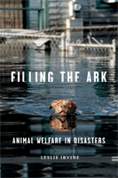

<body bgcolor="#FFFFFF" text="#000000" link="#0000FF" vlink="#CC0000" alink="#CC0000"><center><hr width="350" size="1" align="center" noshade>The fate of animals in disasters depends on practical solutions informed by compassion and common sense<hr width="350" size="1" align="center" noshade><p><a href="https://cdcshoppingcart.uchicago.edu/Cart/ChicagoBook.aspx?ISBN=9781592138340&&PRESS=temple" target="_top">Buy this book!</a> | <a href="https://cdcshoppingcart.uchicago.edu/Cart/Cart.aspx?PRESS=temple" target="_top">View Cart</a> | <a href="https://cdcshoppingcart.uchicago.edu/Cart/Cart.aspx?PRESS=temple" target="_top">Check Out</a></p><p></p></center><!--none//--><h1>Filling the Ark</h1>
<H2>Animal Welfare in Disasters</H2>
<h3>Leslie Irvine</h3>
<P>cloth 1-59213-834-9 $30.50, May 09, <FONT COLOR=#990033>Available</FONT>
<BR> 176 pp
5.5x8.25
</P><BLOCKQUOTE><I>"Filling the Ark<i> is a fascinating combination of scholarship, public policy, and animal advocacy. Leslie Irvine examines the plight of animals in the face of man-made and natural disasters in light of larger issues associated
with our society's ambivalence about the moral status of other species. The writing is excellent and the author's first hand experiences rescuing
companion animals during Hurricane Katrina are compelling."</i><BR>&#151<b>Harold Herzog</b>, Department of Psychology,
Western Carolina University</p></I></BLOCKQUOTE>
<p>When disasters strike, people are not the only victims. Hurricane
Katrina raised public attention about how disasters affect dogs, cats,
and other animals considered members of the human family. In this
short but powerful book, noted sociologist Leslie Irvine goes beyond
Katrina to examine how disasters like oil spills, fires, and other
calamities affect various animal populations&#151on factory farms, in
research facilities, and in the wild.</p>
<p><i>Filling the Ark</i> argues that humans cause most of the risks faced
by animals and urges for better decisions about the treatment of
animals in disasters. Furthermore, it makes a broad appeal for the
ethical necessity of better planning to keep animals out of jeopardy.
Irvine not only offers policy recommendations and practical advice for evacuating animals, she also makes a strong case for rethinking our
use of animals, suggesting ways to create more secure conditions.</p>
<BR>&nbsp;<h2>Excerpt</h2><P>Excerpt available at <a href="http://www.temple.edu/tempress">www.temple.edu/tempress</a></p>
<BR>&nbsp;<h2>Reviews</h2>
<p><i>"In exploring our relationships with companion animals, factory farm animals, birds and marine wildlife, and research animals, [Irvine] not only discusses how manmade and natural catastrophes like oil spills and hurricanes have affected animals but also urges us to rethink our use of animals as we often put them in harm’s way. With firsthand experience in rescuing pets during Hurricane Katrina, Irvine offers valuable advice for avoiding mass casualties in disaster situations." </i><br>&#151;<b><i>Library Journal </i></b>
<p><I>"This is a clarion call to civil society for a disaster preparedness that includes all animals, wild and domestic, especially the most vulnerable who are confined in laboratories, zoos, and factory farms. Be they human or animal, as Irvine shows, the more oppressed and exploited, the more is the suffering when disaster strikes."</I> <br>&#151<b>Michael W. Fox, DSc, PhD</b>, veterinarian, and author of <i>Bringing Life to Ethics: Global Bioethics for a Humane Society</i>
<p><I>"In </i>Filling the Ark<i>, Professor Irvine discusses an important area in animal rights and animal welfare scholarship. By sharing her personal perspective and experiences in a book based on extensive research on consequences for animals in disasters, Irvine creates a highly informative and very readable package."</I><br>&#151<b>Marsha L. Baum</b>, Professor of Law, University of New Mexico, and author of <i>When Nature Strikes: Weather Disasters and the Law</i>
<p><i>"Sociologist Irvine studies how natural disasters affect the animals that live with us.... [She] examines how disaster-response decisions involving animals are made.... [A]s the Katrina disaster demonstrated... animals were either abandoned as their owners fled or were forcibly left behind when rescuers refused to allow the evacuation of pets. Animals on factory farms comprise 98 percent of the domestic animals living in the U.S., and yet the conditions under which they live make them extremely vulnerable when a disaster strikes. Finally, animals in research facilities are most vulnerable to loss of power, which shuts off ventilation and air-conditioning. In each section, Irvine offers suggestions as to how the loss of animal lives can be averted."</i><br>&#151;<b><i>Booklist</i></b>
<p><i>"In </i>Filling the Ark<i>, author Leslie Irvine weaves a tale that is both eye-opening and tragic.... Irvine does animal welfarists, humanitarians and aid workers a great service by putting all the pieces together in one place, and showing how cultural views, economic challenges, racism, and inadequate infrastructure combine to create disasters within disasters. It is not necessarily the hurricane that is tragic, she suggests, but our response to it is.... The biggest issue now, it seems, is — how can we get this book into the hands of people who will listen, and who have the power to implement these changes?"</i><br>&#151;<b><i>Animal Inventory Blog </i></b>
<p><i>"Irvine brings to light many examples of where disaster planning and emergency response have been wholly inadequate in protecting the welfare of animals.... On the basis of her first hand experience and extensive research she makes recommendations for disaster planning and policy, but her ambitions are larger than this; she makes the case for a larger re-appraisal of our use of animals. In writing </i>Filling the Ark<i>, Irvine poses important questions...What emerges is a sobering account covering public policy, the practicalities of handling animals in emergencies and animal advocacy....</i>Filling the Ark<i> provides a consistent and compelling argument on how we could, and should, be doing more through our emergency management practices to ensure the welfare of animals." </i><br>&#151;<b><i>The Australian Journal of Emergency Management</i></b>
<p><i>"Irvine uses natural disasters as a springboard for discussion of the ethics of our relationships with animals.... This is a deeply felt and carefully thought out book, which will be of interest to anyone interested in animals and disasters, either together or separately." </i><br>&#151;<b><i>Natural Hazards Observer</i></b>
<p><i>"The author illustrates that humans are not the only victims in disasters and are often at fault for the perils animals suffer. She argues that it is our own decisions and actions that 'make animals so vulnerable to disasters' and offers advice on the multiple ways animals may be made less vulnerable, not the least of which is to rethink 'our uses of animals." </i><br>&#151;<b><i>Animal Welfare Institute Quarterly</i></b>
<p><i>"[I]f you are interested in a more broad based examination of the differences between types of animals along the sociozoologic scale during a disaster, then this quick read should fulfill that need. Irvine gives us a look at real issues regarding how we treat and use animals in everyday life, and how those decisions can impact an animal’s chance of survival in a disaster. Although I believe that as a society we have many, many miles to travel before we are ready to think outside the box and put animal welfare on a different plain, I found Irvine’s book to be entertaining and thought provoking. It will make me think twice about whom (and what) I should allow on my ark." </i><br>&#151;<b><i>The Journal of Homeland Security and Emergency Management</i></b>
<p><i>"As Irvine argues, we have a responsibility to minimize the vulnerability of animals within our care and those that can be affected by our actions....Aimed at general readers and those interested in animal-human interaction, this book serves as a reminder that disasters put more than human life at stake."</I><br>&#151<b><i>Contemporary Sociology </b></i>
<p><i>"Irvine’s book underlines, and sheds new light on, our complex and ambivalent relationships with other animals, or the rest of the natural world.... </i>Filling the Ark<i> is a fascinating account of the heroic efforts made by people in animal rescue organisations [sic] to help reduce loss of life.... In taking us through details of how disasters or their aftermath can cause animal suffering and death, Irvine does not flinch from naming the extent of the problems and cover-ups. It is not just the disaster itself, but also social and cultural consequences, which impact animals." </i><br>&#151;<b><i>Humanimalia</i></b>
<p><i>"[A] first-hand account primarily of the animals, but also the people, involved in disasters such as Hurricane Katrina, from both a companion animal and a laboratory animal perspective.... Rather than merely planning for the future of what to do when a nightmare unfolds, [Irvine] encourages us to make animals less vulnerable here and now.... This is a book that should be read by many throughout fields as diverse as veterinary medicine, social science and public policy."</i><br>&#151;<b><i>Anthrozoos</i></b>
<BR>&nbsp;<h2>Contents</h2><P>
<p>Acknowledgments
<br>Introduction
<br>1. Companion Animals
<br>2. Animals on Factory Farms
<br>3. Birds and Marine Wildlife
<br>4. Animals in Research Facilities
<br>Conclusion: Noah’s Task
<br>Notes
<br>Bibliography
<br>Index
</P><BR>&nbsp;<H2>About the Author(s)</H2>
<table><tr><td valign="top"><img src="/tempress/authors/1977_au1.gif" height="90" width="75"></td><td width="100%" valign="middle"><p><b>Leslie Irvine</b> is Associate Professor of Sociology, University of Colorado at Boulder and the author of two previous books, including <i><a href="1725_reg.html" target="_top">If you Tame Me: Understanding Our Connection with Animals</a></i> (Temple).</P></td></tr></table>
<BR><H2>Subject Categories</H2>
<p><A HREF="/tempress/animal_soc.html" TARGET="_top">Animals and Society</a>
<BR><A HREF="/tempress/nature.html" TARGET="_top">Nature and the Environment</a>
<BR><A HREF="/tempress/philosophy.html" TARGET="_top">Philosophy and Ethics</a>
</p>
<BR><h2 class="inpageheading">In the series</H2>
<P><I><a href="http://www.temple.edu/tempress/animal_ethics.html" onMouseOver="window.status='Click for other books in this series!'; return true;" onMouseOut="window.status=''; return true;" target="_top">Animals and Ethics</a></i>, edited by Marc Bekoff.
</p><p>Building on the idea that human and non-human animals share a common environment, the <i>Animals and Ethics</i> series will produce a wide range of books that explain animal behavior, show how humans’ decisions and dispersal around the planet affect animals’ interests and experience, and propose practical solutions to the ethical problems that arise from human effects on our world. The books will be rooted in the natural and social sciences, but the authors--mostly scientists, social scientists and philosophers—will write for a broad audience, including children.</p>
<p align="center"><a href="https://cdcshoppingcart.uchicago.edu/Cart/ChicagoBook.aspx?ISBN=9781592138340&&PRESS=temple" target="_top">Buy this book!</a> | <a href="https://cdcshoppingcart.uchicago.edu/Cart/Cart.aspx?PRESS=temple" target="_top">View Cart</a> | <a href="https://cdcshoppingcart.uchicago.edu/Cart/Cart.aspx?PRESS=temple" target="_top">Check Out</a></p><p><font face="Arial" size="1"><a href="copyright.html" onMouseOver="window.status='Web Copyright Policy';return true;" onMouseOut="window.status=''" title="Web Copyright Policy">&copy;</a> 2015 <a href="http://www.temple.edu" target="new" onMouseOver="window.status='Link to Temple University home page';return true;" onMouseOut="window.status=''" title="Link to Temple University home page">Temple University</a>. All Rights Reserved. http://www.temple.edu/tempress/titles/1977_reg.html</font></p>